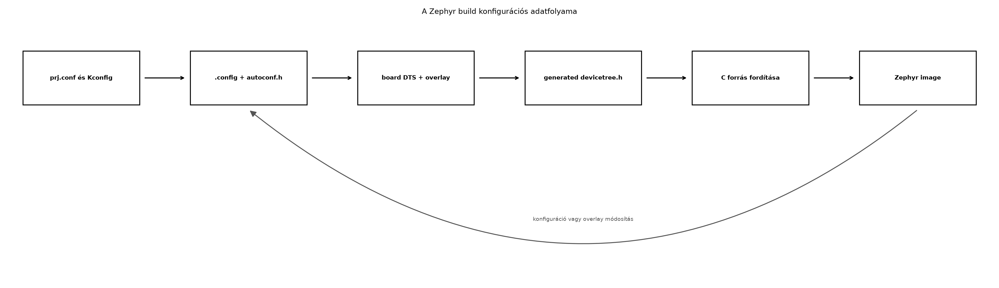

A TerraSense ts-node eszközszoftverének egyszerre kell
futnia a laborban használt native_sim szimulátoron és –
opcionálisan – valós fejlesztőkártyán. Ha a szenzor I2C-címét, a busz
sorszámát vagy az engedélyezett alrendszereket közvetlenül a C kódba
írnánk, a két környezethez két forrásfát kellene fenntartani, és minden
hardvermódosításnál a programlogikát is meg kellene változtatni. A
Zephyr ezt a problémát két, egymástól élesen elkülönített réteggel oldja
meg: a devicetree írja le a hardver létezését
és kapcsolatait, a Kconfig pedig a szoftver
viselkedését és az engedélyezett funkciókat. A kettő együtt
teszi lehetővé, hogy ugyanaz a C kód újraforduljon a szimulátorra és
valós kártyára, csak a build cél és a megfelelő overlay változzon.
A devicetree (eszközfa) a Zephyrben a hardver leírására szolgáló hierarchikus adatszerkezet. A Linux kernelből ismert fogalom, de itt nincs futás közbeni értelmezés: a devicetree-t a build rendszer dolgozza fel, és C makrókat generál belőle.
Definíció. A devicetree node a fa egy
csomópontja, amely egy hardverelemet (például egy I2C-vezérlőt vagy egy
szenzort) ír le. A node neve és elérési útja azonosítja, például
/soc/i2c@40003000/sensor@48. A node-okhoz
property-k (tulajdonságok) tartoznak, amelyek kulcs-érték
párok. A legfontosabb property-k:
compatible: a node-ot egy adott driverthez kötő
sztring; a Zephyrben gyakran gyártói előtaggal, például
"zephyr,sim-eeprom" vagy "vnd,tmp116".reg: a hardveres címzés, például egy I2C-eszköz 7 bites
címe vagy egy memóriatartomány.status: "okay" vagy
"disabled", tehát aktív-e az adott node.label: választható, ember által olvasható azonosító,
bár újabb Zephyr-verziókban egyre kevésbé használjuk.alias: a gyökér node alatt található
aliases részen keresztül rövid, stabil nevet adhatunk egy
node-nak, például i2c0 = &i2c0;.Definíció. Az alias (álnév) a devicetree
egy rövid, alkalmazás-szintű hivatkozása egy node-ra. A C kódban a
DT_ALIAS(i2c0) makróval érhető el, így nem kell a teljes
hardveres elérési utat ismerni.
A board-specifikus devicetree fájlok a Zephyr fa boards/
könyvtárában, illetve a SOC-gyártó által definiált .dtsi
fájlokban élnek. Az alkalmazás által hozott módosítások az
overlay-ben kapnak helyet.
Definíció. A devicetree overlay egy olyan
.overlay kiterjesztésű fájl, amely a board alap
devicetree-jére rétegződik: a benne szereplő node-ok hozzáadódnak,
meglévő property-k felülíródnak, a status például
"okay"-ra állítható. A Zephyr a
boards/<board>.overlay fájlt automatikusan betölti,
ha a boards/ mappában van és a neve megegyezik a cél
boarddal.
Példa egy native_sim.overlay-re, amely egy emulált, 4096
bájtos EEPROM-ot vesz fel:
/ {
aliases {
eeprom0 = &sim_eeprom0;
};
sim_eeprom0: eeprom@0 {
compatible = "zephyr,sim-eeprom";
size = <4096>;
status = "okay";
};
};A sim_eeprom0 node egy label, amelyre a
C kódban a DT_NODELABEL(sim_eeprom0) makróval
hivatkozhatunk. A compatible a Zephyr EEPROM-szimulátorához
köti a node-ot. A size property az emulált memória mérete
bájtban.
A devicetree feldolgozása során a build rendszer legenerálja a
build/zephyr/include/generated/devicetree_generated.h
fejlécet. Az ebben lévő DT_ előtagú makrók fordítási időben
elérhetők, így a C kódban például:
DT_NODELABEL(sim_eeprom0) – a node azonosítója,DT_PROP(DT_NODELABEL(sim_eeprom0), size) – a
size property értéke,DT_ALIAS(eeprom0) – az alias mögötti node
azonosítója.A DT_PROP makró fordítási időben konstanssá fejti ki az
értéket, ezért nincs futás közbeni devicetree-értelmezés, és a kód
mérete sem nő.
A Kconfig a Zephyr konfigurációs rendszere. Segítségével nem a hardver létezését, hanem a szoftver viselkedését hangoljuk: mely alrendszerek épüljenek be, mekkora legyen egy pufferméret, hány szál legyen, mely driverek forduljanak le.
Definíció. A Kconfig szimbólum egy
beállítható, logikai vagy érték típusú opció. A konfigurációs rendszer a
szimbólumokat CONFIG_<NÉV> formában generálja le. Az
alkalmazás prj.conf fájlja ezeket a szimbólumokat állítja
be.
Például az EEPROM-szimulátor engedélyezése:
CONFIG_EEPROM=y
CONFIG_EEPROM_SIMULATOR=yA prj.conf a projekt gyökérkönyvtárában lévő
konfigurációs bemenet. A build során a Zephyr képzi a végleges
.config fájlt (a build/zephyr/.config elérési
úton), amely minden tényleges értéket tartalmaz, és a
autoconf.h fejlécet, amelyből a C kód szintén
CONFIG_ makrókat kap. A konfiguráció interaktívan a
menuconfig felülettel is szerkeszthető, de a
prj.conf szöveges, verziózható bemenetként alkalmasabb a
laborokhoz.
A Kconfig lehetőségek függőségeket fejezhetnek ki. Például
CONFIG_EEPROM_SIMULATOR csak akkor válik elérhetővé, ha
CONFIG_EEPROM=y. A függőségeket a Kconfig fájlokban
található depends on vagy select kulcsszavak
írják le. A depends on azt jelenti, hogy az opció csak
akkor látható és állítható, ha a feltétel igaz; a select
automatikusan beállít egy másik opciót. A gyakorlatban a
prj.conf-ban explicit módon mindkét szükséges szimbólumot
felvesszük, hogy a konfiguráció olvasható és előrelátható legyen.
A devicetree és a Kconfig közötti munkamegosztás tehát: a devicetree
azt mondja meg, hogy milyen hardver van, a Kconfig azt,
hogy milyen szoftverfunkciót építsünk be. Egy I2C-szenzornál a
devicetree-ben adjuk meg a compatible-et és a buszcímet, a
Kconfigban pedig engedélyezzük az I2C alrendszert és az adott szenzor
drivert.
A native_sim board a Zephyr saját szimulációs célja. Itt
a program Linux-folyamatként fut, de ugyanazt a Zephyr kernel API-t
használja, mint egy valós beágyazott cél. A hardvert a devicetree
overlay-ben emulált perifériákkal modellezzük. A Zephyr rendelkezik
például az EEPROM-szimulátorral (zephyr,sim-eeprom), amely
egy memóriában tárolt eszközt biztosít, és az EEPROM API-n keresztül
írható-olvasható.
Ellenőrzési igény. A zephyr,sim-eeprom
pontos compatible sztringjét és a hozzá tartozó Kconfig
szimbólumot az adott Zephyr kiadás binding dokumentációjában és
drivers/eeprom forrásában ellenőrizni kell. Hasonlóképpen,
az emulált szenzor kifejezés alatt a jelen alfejezetben nem egy
konkrét érzékelő-drivert, hanem olyan emulált perifériát értünk, amely a
native_sim-en valós I2C-hardver nélkül is működik. A
későbbi Szenzorolvasás a Zephyr sensor API-val
alfejezet ezt a mintát viszi tovább, és ott egy saját, minimális
szenzor-emulátort építünk.
A hordozhatóság kulcsa, hogy az alkalmazáskód soha ne tartalmazzon
hardverfüggő konstansokat. A C program a devicetree-ből nyeri a
hardverazonosítókat, a Kconfigból pedig az engedélyezett funkciókat.
Amikor a cél hardvert váltjuk, csak a board nevet és a board-specifikus
overlay-t cseréljük; a src/main.c és a
prj.conf érdemben változatlan maradhat.

A folyamat: a Kconfig bemenetekből .config és
autoconf.h, a board DTS-ből és overlay-ből pedig
devicetree_generated.h keletkezik. A C forrás ezeket a
generált fejléceket használja, így a build végén egyetlen, a
célplatformra optimalizált image jön létre. Ha bármelyik bemenetet
módosítjuk, a build újrafuttatásával a generált állományok
frissülnek.
A devicetree és a Kconfig közötti választás alapkérdése, hogy a beállítás hardverjellemzőt vagy szoftverfunkciót jelent-e.
| Kérdés | Devicetree | Kconfig | Példa |
|---|---|---|---|
| Van-e az adott hardver? | igen | nem | I2C-szenzor jelen van-e |
| Mi a busz címe? | igen (reg) |
nem | szenzor 0x48-on |
| Legyen-e a driver beépítve? | status |
igen (CONFIG_*=y) |
CONFIG_EEPROM=y |
| Mekkora legyen egy puffer? | nem | igen | CONFIG_SHELL_CMD_BUFF_SIZE |
| Hány szál induljon? | nem | igen | alkalmazás specifikus |
| Melyik UART a konzol? | igen (chosen) |
részben | zephyr,console |
Továbbvitt eredmény. A TerraSense
ts-node szoftverében a hardverleírást mindig devicetree
overlay-ben, a szoftverfunkciókat pedig prj.conf-ban
tartjuk. Ezt a konvenciót használja az Szenzorolvasás a Zephyr sensor API-val alfejezet,
és ez teszi lehetővé, hogy később az LoRaWAN
vagy az OTA-frissítés hardverfüggő részeit is
ugyanazon minta szerint válasszuk szét.
Az overlay-ek használatának további előnye a verziózhatóság: a
boards/native_sim.overlay a szimulátorhoz, egy
boards/<valódi_board>.overlay pedig a laborban
opcionálisan csatlakoztatott kártyához tartozik. A két fájl egyszerre
létezhet a projektben, és a Zephyr automatikusan a cél boardhoz tartozó
nevet tölti be.
native_sim-enMunkakönyvtár: ~/iot-labor/i012
Előfeltétel: a Laborkörnyezet és az Első alkalmazás laborok után működő Zephyr
workspace és west parancs.
mkdir -p ~/iot-labor/i012 && cd ~/iot-labor/i012Hozzuk létre a következő fájlokat.
CMakeLists.txt:
cmake_minimum_required(VERSION 3.20)
find_package(Zephyr REQUIRED HINTS $ENV{ZEPHYR_BASE})
project(ts_node_i012)
target_sources(app PRIVATE src/main.c)prj.conf:
# I2C alrendszer engedélyezése (valós kártyán szükséges, native_sim-en az emulált
# periféria mögötti infrastruktúra is ezt használhatja)
CONFIG_I2C=y
# EEPROM API és a szimulátor driver beépítése
CONFIG_EEPROM=y
CONFIG_EEPROM_SIMULATOR=yboards/native_sim.overlay:
/ {
aliases {
eeprom0 = &sim_eeprom0;
};
sim_eeprom0: eeprom@0 {
compatible = "zephyr,sim-eeprom";
size = <4096>;
status = "okay";
};
};src/main.c:
#include <zephyr/kernel.h>
#include <zephyr/devicetree.h>
#include <zephyr/device.h>
#include <zephyr/drivers/eeprom.h>
#define SIM_EEPROM_NODE DT_NODELABEL(sim_eeprom0)
#define SIM_EEPROM_SIZE DT_PROP(SIM_EEPROM_NODE, size)
int main(void)
{
printk("TerraSense i012: devicetree es Kconfig labor\n");
printk("Emulalt EEPROM node: %s\n", DT_NODE_FULL_NAME(SIM_EEPROM_NODE));
printk("Meret: %u B\n", (unsigned int)SIM_EEPROM_SIZE);
const struct device *eeprom = DEVICE_DT_GET(SIM_EEPROM_NODE);
if (!device_is_ready(eeprom)) {
printk("EEPROM nem elerheto\n");
return 0;
}
printk("EEPROM device: %s kesz\n", eeprom->name);
uint8_t buf[4] = {0x11, 0x22, 0x33, 0x44};
int ret = eeprom_write(eeprom, 0, buf, sizeof(buf));
if (ret < 0) {
printk("EEPROM iras hiba: %d\n", ret);
} else {
printk("EEPROM iras ok\n");
}
return 0;
}A DT_NODE_FULL_NAME a devicetree-beli teljes nevet adja
vissza, a DT_PROP a size property értékét, a
DEVICE_DT_GET pedig a node-hoz tartozó eszközstruktúra
pointerét. A kód tehát semmilyen hardvercímet nem tartalmaz.
Build és futtatás:
west build -b native_sim -d build
./build/zephyr/zephyr.exeVárt kimenet (a pontos szövegezés eltérhet):
TerraSense i012: devicetree es Kconfig labor
Emulalt EEPROM node: /eeprom@0
Meret: 4096 B
EEPROM device: sim_eeprom0 kesz
EEPROM iras okTovábbvitt eredmény. A
~/iot-labor/i012/boards/native_sim.overlay és a
~/iot-labor/i012/prj.conf fájlokat használja és bővíti
tovább az Szenzorolvasás a Zephyr sensor API-val
alfejezet. Ott egy emulált hőmérséklet-szenzor node-ját vesszük fel
ugyanebbe az overlay-be, és a prj.conf-ban engedélyezzük a
CONFIG_SENSOR=y opciót.
A labor működését két szinten ellenőrizzük. Egyrészt a program kimenete igazolja, hogy a device elérhető és működik. Másrészt a build könyvtárban megnézhetjük a generált konfigurációt:
grep CONFIG_EEPROM build/zephyr/.configVárhatóan mindkét opció =y. A devicetree feldolgozását a
generált fejlécben is ellenőrizhetjük:
grep -n "sim_eeprom0" build/zephyr/include/generated/devicetree_generated.h | headHa a sim_eeprom0 node nem jelenik meg, az overlay nem
töltődött be.
| Hibatünet | Lehetséges ok | Javítás |
|---|---|---|
DT_NODELABEL(sim_eeprom0) nem definiált |
Az overlay fájl neve nem egyezik a boarddal, vagy rossz könyvtárban van | Helyezd a fájlt boards/native_sim.overlay néven, és
ellenőrizd a build cél boardját |
device_is_ready() hamis |
A CONFIG_EEPROM_SIMULATOR nincs engedélyezve |
Add hozzá a prj.conf-hoz, és futtasd újra a
buildet |
A .config-ban
# CONFIG_EEPROM is not set |
A prj.conf nem került beolvasásra |
Ellenőrizd, hogy a prj.conf a projekt gyökerében van,
és a west build a projekt könyvtárából indul |
| A build nem találja a boardot | A Zephyr workspace nincs aktiválva | Futtasd a west update és a
source/west zephyr-export parancsokat, ahogyan
az első alkalmazás laborban |
A menuconfig interaktív felületét a
west build -t menuconfig paranccsal nyithatjuk meg. Ez
hasznos a Kconfig függőségek vizsgálatára, de a laborokban a
prj.conf verziózott módosítását részesítjük előnyben.
Hardveradatok beégetése a C kódba. Ha valaki a
szenzor I2C-címét #define TEMP_SENSOR_ADDR 0x48 formában
adja meg, a kód azonnal függeni fog egy adott kapcsolástól. A Zephyrben
a helyes megoldás a devicetree reg property, mert innen a
cím a DT_PROP makróval nyerhető ki, és overlay-ben
felülírható anélkül, hogy a programlogikához nyúlnánk.
A devicetree és a Kconfig összekeverése. Gyakori hiba, hogy valaki a devicetree-ben próbál szoftverfunkciót beállítani, vagy Kconfigban hardvercímet. A devicetree nem tud például pufferméretet konfigurálni, a Kconfig pedig nem tudja megmondani, hogy egy adott szenzor melyik buszra van kötve. A kettő szerepét mindig a fenti táblázat szerint válasszuk szét.
Az status = "disabled" elfelejtése.
Ha egy board DTS-ében alapból letiltott perifériát akarunk használni, az
overlay-ben nem elég a compatible-et megadni, a
status-t is "okay"-ra kell állítani. Ellenkező
esetben a device nem jön létre, hiába engedélyeztünk minden Kconfig
opciót.
Túlzott támaszkodás a
menuconfig-ra. A menuconfig jó
felfedezőeszköz, de a benne mentett változtatások gyakran a build
könyvtár .config-jába kerülnek, és elvesznek takarítás
után. A reprodukálható konfigurációt mindig a prj.conf-ban
kell rögzíteni.
Magyarázd el egy konkrét példán, hogy miért kerül a szenzor I2C-címe a devicetree-be, és miért nem Kconfigba! Milyen változás esetén kell módosítani a Kconfigot?
Egy valós kártyán a ts-node egy tmp116
hőmérséklet-szenzort használ I2C1-en, 0x48 címen. Tervezd
meg a devicetree overlay-részletet: milyen node-ot,
compatible-et, reg-et és status-t
adnál meg? Írd le a boards/<board>.overlay tartalmát
pszeudokódban.
A labor EEPROM-os overlay-jét egészítsd ki egy
lab,emul-temp node-dal, amely később az emulált
hőmérséklet-szenzort fogja reprezentálni. A node legyen
temp_sensor@0 néven a gyökér alatt,
compatible = "lab,emul-temp"; és tartalmazzon egy
sample-interval-ms = <5000>; property-t. A C kódban a
DT_NODELABEL(temp_sensor@0) makróval írd ki a property
értékét.
A labor buildje sikeres, de a program kimenetében az EEPROM nem
elérhető. A .config-ban a CONFIG_EEPROM értéke
y, de a CONFIG_EEPROM_SIMULATOR nincs
beállítva. Miért nem engedélyeződött automatikusan, és hogyan javítanád?
Fogalmazd meg a prj.conf helyes bejegyzéseit.
A szenzor I2C-címe hardvertulajdonság: ugyanaz a szoftver másik
kártyán lehet, hogy más címen éri el ugyanazt a szenzort, vagy másik
szenzort használnak. Ezért a cím a devicetree reg
property-jébe kerül, és overlay-ben felülírható. A Kconfig viszont
szoftverfunkciókat szabályoz, például hogy a szenzor drivert egyáltalán
beépítsük-e (CONFIG_TMP116=y). Ha csak a címet
változtatjuk, a Kconfighoz nem kell nyúlni; ha egy új szenzorfajtát kell
támogatni, akkor annak Kconfig opcióját is engedélyezni kell.
A devicetree overlay-részlet például:
/ {
aliases {
temp0 = &temp_sensor;
};
i2c1 {
temp_sensor: tmp116@48 {
compatible = "ti,tmp116";
reg = <0x48>;
status = "okay";
};
};
};A valódi compatible-et a gyártói binding határozza meg;
a ti,tmp116 itt illusztratív, a tényleges stringet a Zephyr
kiadásban ellenőrizni kell. A reg = <0x48> az
I2C-cím, a status = "okay" biztosítja, hogy a node aktív
legyen.
Az overlay kiegészítése:
/ {
aliases {
eeprom0 = &sim_eeprom0;
temp0 = &temp_sensor;
};
sim_eeprom0: eeprom@0 {
compatible = "zephyr,sim-eeprom";
size = <4096>;
status = "okay";
};
temp_sensor: temp_sensor@0 {
compatible = "lab,emul-temp";
sample-interval-ms = <5000>;
status = "okay";
};
};A main.c-ben a kiíráshoz:
#define TEMP_SENSOR_NODE DT_NODELABEL(temp_sensor)
#define TEMP_INTERVAL DT_PROP(TEMP_SENSOR_NODE, sample_interval_ms)
printk("Mintaveteli ido: %u ms\n", (unsigned int)TEMP_INTERVAL);Továbbvitt eredmény. A temp_sensor
node-ot és a sample-interval-ms property-t az Szenzorolvasás a Zephyr sensor API-val alfejezet a
tényleges szenzoremulátor driverrel köti össze, és ott már az
intervallum alapján ütemezett mintavételt is megvalósítjuk.
A CONFIG_EEPROM_SIMULATOR azért nem állt be, mert a
Kconfigban a szimulátor opció depends on EEPROM függőséggel
él, de nincs select kapcsolat, amely automatikusan
bekapcsolná. A CONFIG_EEPROM=y tehát csak az EEPROM
alrendszert építi be, a szimulátor külön opció. A
prj.conf-ba mindkét sort explicit fel kell venni:
CONFIG_EEPROM=y
CONFIG_EEPROM_SIMULATOR=yEzután a west build újrafuttatása a szimulátor drivert
is beépíti, és a device_is_ready() igaz lesz.
A fejezetben megismertük a Zephyr két fő konfigurációs rétegét. A
devicetree a hardver fa leírása: node-ok, property-k,
compatible, alias; az overlay-ek segítségével
boardspecifikus módosításokat rétegzünk az alap leírásra. A Kconfig a
szoftverfunkciókat és azok függőségeit kezeli, a prj.conf a
verziózott bemenet, a tényleges értékeket a .config és az
autoconf.h tartalmazzák. A labor
~/iot-labor/i012/ könyvtárában egy emulált EEPROM-ot
vettünk fel native_sim-en, és C kódból DT_
makrókkal, valamint a device API-val elértük. A létrehozott
boards/native_sim.overlay és prj.conf a
továbbvitt eredmény: az Szenzorolvasás a Zephyr
sensor API-val alfejezet ebből indul ki, amikor emulált
hőmérséklet-szenzort ad a TerraSense ts-node
projekthez.
native_sim board dokumentáció a Zephyr projektben.zephyr,sim-eeprom compatible string és a
CONFIG_EEPROM_SIMULATOR Kconfig szimbólum pontos neve a
telepített Zephyr verzióban ellenőrizendő.native_sim-en kiadásonként változhat; a jelen alfejezet
EEPROM-szimulátorral demonstrálta a DT+Kconfig együttműködést, a
tényleges szenzor-emulátor az Szenzorolvasás a
Zephyr sensor API-val laborban készül el.